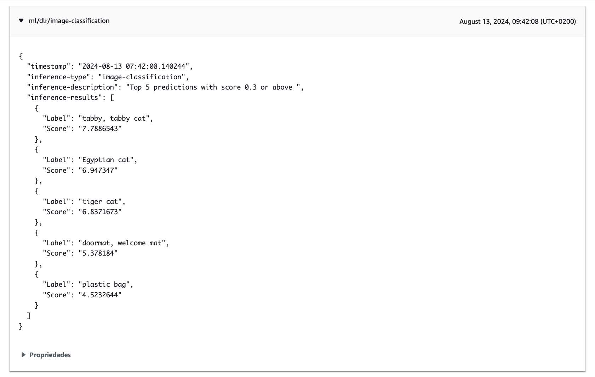

Actividade 1
COMPOÑENTES DE APRENDIZAXE MÁQUINA
Obxectivo
O obxectivo desta actividade é comprobar o funcionamento dos compoñentes para a execución de modelos de aprendizaxe máquina en dispositivos Greengrass. Usaremos como exemplo o compoñente de clasificación de imaxes con Deep Learning Runtime (DLR). Este compoñente instala o runtime de DLR e utiliza un modelo ResNet-50 pre-adestrado para realizar a clasificación de imaxes. Os resultados da clasificación publícanse nun tópico MQTT predefinido.
Nota
Podes ver aquí a documentación sobre a execución de modelos de Aprendizaxe Máquina no Greengrass.
Preparar a instancia do ambiente Cloud9
Antes de despregar o compoñente, temos que aumentar a cantidade de disco dispoñíbel na instancia EC2 do ambiente Cloud9. Fai o seguinte:
- Nun terminal do ambiente Cloud9 executa o comando
df -hpara ver o espazo de disco dispoñíbel.
Imaxe: Espazo de disco dispoñíbel.
-
Na consola do servizo Cloud9 abre as propiedades do ambiente edgeDevice e na aba Instancia do EC2 preme no botón Administrar instancia do EC2.
-
Na consola EC2 escolle a instancia para ver as súas propiedades e na aba Almacenamento preme no identificador do volume EBS.
-
Na consola EBS escolle o volume da instancia e no menú de Accións escolle a opción Crear instantanea. Pon unha descrición e acepta para crear a instantanea.
Nota
Esta instantanea serviranos como copia de respaldo no caso de que haxa algún problema durante o redimensionamento do volume.
Imaxe: creación da instantanea do volume.
- Unha vez creada a instantanea, escolle de novo o volume na consola EBS e no menú de Accións escolle a opción Modificar volume. Cambia o tamaño a 100GiB e acepta para modificar.
Imaxe: modificación do tamaño do volume.
-
Para poder facer uso do novo espazo adicional hai que agardar a que o volume pase ao estado
En uso - optimizando (#%). Unha vez que iso aconteza fai o seguinte nun terminal do ambiente Cloud9:- Executa o comando
lsblk /dev/nvme0n1. O volume aparece co novo tamaño porén o espazo adicional aínda está sen asignar a ningunha partición.
Imaxe: espazo de disco adicional aínda sen usar.
- Incrementa o tamaño da partición 1 executando o comando
sudo growpart /dev/nvme0n1 1. - Executa de novo o comando
lsblk /dev/nvme0n1e comproba como agora o espazo adicional aparece xa asignado á partición 1.
Imaxe: espazo adicional asignado á partición 1.
- Redimensiona o sistema de ficheiros montado nesa partición executando o comando:
sudo resize2fs /dev/root. - Comproba que se redimensionou o sistema de ficheiros executando o comando
df -h.
- Executa o comando
Imaxe: sistema de ficheiros redimensionado.
Despregadura do compoñente para a clasificación de imaxes
Para despregar o compoñente fai o seguinte:
- No ambiente Cloud9 instala a libraría GNU C, que é un dos requisitos do compoñente.
$ sudo apt update
$ sudo apt install glibc-source -y
-
No cliente MQTT da consola de AWS IoT subscríbete ao tópico predefinido
ml/dlr/image-classification. O tópico pode cambiarse na configuración do compoñente. -
Noutra xanela diferente, escolle a opción Compoñentes dentro do menú Dispositivos Greengrass da consola de AWS IoT.
-
Escolle a aba Compoñentes públicos e preme no nome do compoñente
aws.greengrass.DLRImageClassification. -
Revisa a configuración por defecto e comproba na documentación do compoñente o significado dos parámetros configurados. Revisa tamén as dependencias do compoñente.
-
Desprega o compoñente premendo en Despregar e indicando as opcións seguintes:
- Adicionar á despregadura: escolle Adicionar a unha despregadura exitente e a despregadura Deployment for GreengrassQuickStartGroup.
- Seleccionar compoñentes: podes desactivar os compoñentes personalizados que se usaron como exemplo no curso.
Deixa todas as demais opcións nos seus valores por defecto.
Verificación da despregadura
- Na consola IoT comproba que a despregadura remata sen erros.
Nota
Se hai erros debidos a compoñentes locais do curso podes reinicialos e reintentar a despregadura ou eliminalos se iso non o soluciona. Mira na sección de Tips&Troubleshoot do curso como facelo.
- No cliente MQTT da consola do AWS IoT comproba que se recibiu o resultado da inferencia no tópico
ml/dlr/image-classification.
 Imaxe: resultado do algoritmo de clasificación no tópico MQTT.
- Comproba a saída no ficheiro de log do compoñente.
$ sudo tail -2 /greengrass/v2/logs/aws.greengrass.DLRImageClassification.log
2024-08-13T07:42:08.693Z [INFO] (Copier) aws.greengrass.DLRImageClassification: stdout. {"timestamp": "2024-08-13 07:42:08.140244", "inference-type": "image-classification", "inference-description": "Top 5 predictions with score 0.3 or above ", "inference-results": [{"Label": "tabby, tabby cat", "Score": "7.7886543"}, {"Label": "Egyptian cat", "Score": "6.947347"}, {"Label": "tiger cat", "Score": "6.8371673"}, {"Label": "doormat, welcome mat", "Score": "5.378184"}, {"Label": "plastic bag", "Score": "4.5232644"}]}. {scriptName=services.aws.greengrass.DLRImageClassification.lifecycle.run.script, serviceName=aws.greengrass.DLRImageClassification, currentState=RUNNING}
2024-08-13T07:42:08.694Z [INFO] (Copier) aws.greengrass.DLRImageClassification: stdout. Publishing results to the IoT core.... {scriptName=services.aws.greengrass.DLRImageClassification.lifecycle.run.script, serviceName=aws.greengrass.DLRImageClassification, currentState=RUNNING}
- Se os pasos anteriores non dan os resultados agardados, comproba no log do Greengrass se houbo erros durante a despregadura do compoñente. Podes consultar aquí os erros máis comúns.
Xustificación da actividade
Toma as seguintes capturas para a memoria de xustificación da práctica:
- Ambiente Cloud9 mostrando a saída da execución dos comandos seguintes:
$ sudo /greengrass/v2/bin/greengrass-cli component list | grep -E 'Component Name:.*DLR' -A 3
$ sudo tail -2 /greengrass/v2/logs/aws.greengrass.DLRImageClassification.log
- Consola IoT coa mensaxe MQTT recibida no tópico
ml/dlr/image-classification, na que poida verse o payload.
Importante
As capturas teñen que asemellarse ás que se tomaron no curso e nas prácticas anteriores. As capturas tomadas na consola AWS teñen que incluír o menú superior no que poida verse o nome de usuario da conta.